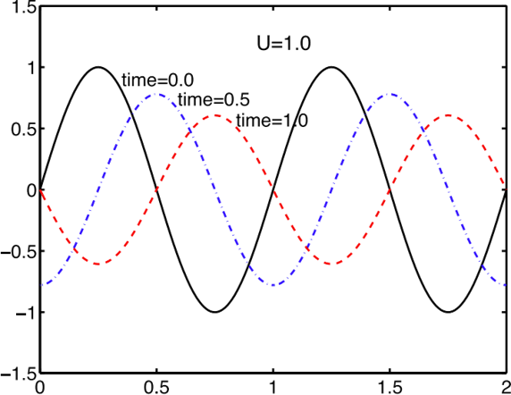
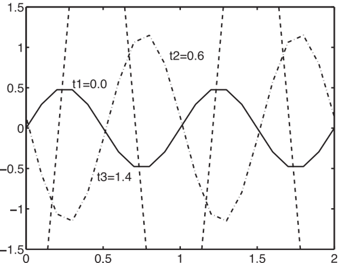

Stability
If accuracy is not a great concern and we only want to see the general behavior of the
solution, or if we want to quickly evolve the solution to steady state, it would be natural to
take large time steps.
While the bad thing is
instability, where time steps that are too large cause the solution to grow instead of decay, eventually leading to values larger than the computer can handle (NaN, or Not a Number)

smaller \(\Delta t\)

larger \(\Delta t\)
A numerical solution method is said to be stable if it does not magnify the errors that
appear in the course of numerical solution process
- For temporal problems, stability
guarantees that the method produces a bounded solution whenever the solution of
the exact equation is bounded
- For iterative methods, a stable method is one that does
not diverge
Stability can be difficult to investigate, especially when boundary conditions and non-linearities are present. For this reason, it is common to investigate the
stability of a method for linear problems with constant coefficients without boundary conditions. Experience shows that the results obtained in this way can often be
applied to more complex problems but there are notable exceptions.
◀
▶